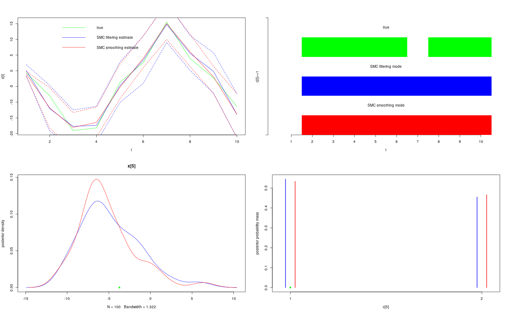

R/smc.r
Run a sequential Monte Carlo algorithm
biips_smc_samples(object, ...) # S3 method for biips biips_smc_samples(object, variable_names, n_part, type = "fs", rs_thres = 0.5, rs_type = "stratified", ...)
| object |
|
|---|---|
| ... | additional arguments to pass to internal functions |
| variable_names | character vector. The names of the unobserved
variables to monitor, e.g.: |
| n_part | integer. Number of particles. |
| type | string containing the characters |
| rs_thres | real. Threshold for the adaptive SMC resampling. (default = 0.5)
|
| rs_type | string. Name of the algorithm used for the SMC
resampling. Possible values are |
A smcarray.fsb.list object, with one named member for
each monitored variable in the variable_names argument and a member
named log_marg_like with an estimate of the log marginal likelihood.
A smcarray.fsb.list object is a named list of
smcarray.fsb objects for different variables. Each
smcarray.fsb object is a named list of smcarray
object, with one member for each type of monitoring (f, s
and/or b) in the type argument. Assuming dim is the
dimension of the monitored variable, a smcarray object is a
list with the members:
array of dimension c(dim, n_part) with the
values of the particles.
array of dimension c(dim, n_part) with
the weights of the particles.
array of dimension dim with Effective Sample Sizes (ESS)
of the particles set.
array of dimension dim with
logicals indicating discreteness of each component.
array of dimension dim with sampling iterations of
each component.
lists of the contitioning variables (observations). Its value is:
for filtering: a list of dimension dim. each member is a
character vector with the respective conditioning variables of the
node array component.
for smoothing/backward_smoothing: a character vector, the same for all the components of the node array.
string with the name of the variable (without subset indices).
vector with the lower bounds of the variable.
vector with the upper bounds of the variable.
string with the type of monitor ('filtering',
'smoothing' or 'backward_smoothing').
biips_model, biips_diagnosis,
biips_summary, biips_density,
biips_table
modelfile <- system.file('extdata', 'hmm.bug', package = 'rbiips') stopifnot(nchar(modelfile) > 0) cat(readLines(modelfile), sep = '\n')#> var c_true[tmax], x_true[tmax], c[tmax], x[tmax], y[tmax] #> #> data #> { #> x_true[1] ~ dnorm(0, 1/5) #> y[1] ~ dnorm(x_true[1], exp(logtau_true)) #> for (t in 2:tmax) #> { #> c_true[t] ~ dcat(p) #> x_true[t] ~ dnorm(0.5*x_true[t-1]+25*x_true[t-1]/(1+x_true[t-1]^2)+8*cos(1.2*(t-1)), ifelse(c_true[t]==1, 1/10, 1/100)) #> y[t] ~ dnorm(x_true[t]/4, exp(logtau_true)) #> } #> } #> #> model #> { #> logtau ~ dunif(-3, 3) #> x[1] ~ dnorm(0, 1/5) #> y[1] ~ dnorm(x[1], exp(logtau)) #> for (t in 2:tmax) #> { #> c[t] ~ dcat(p) #> x[t] ~ dnorm(0.5*x[t-1]+25*x[t-1]/(1+x[t-1]^2)+8*cos(1.2*(t-1)), ifelse(c[t]==1, 1/10, 1/100)) #> y[t] ~ dnorm(x[t]/4, exp(logtau)) #> } #> }data <- list(tmax = 10, p = c(.5, .5), logtau_true = log(1), logtau = log(1)) model <- biips_model(modelfile, data, sample_data = TRUE)#> * Parsing model in: /home/adrien/Dropbox/workspace/rbiips/inst/extdata/hmm.bug #> * Compiling data graph #> Declaring variables #> Resolving undeclared variables #> Allocating nodes #> Graph size: 169 #> Sampling data #> Reading data back into data table #> * Compiling model graph #> Declaring variables #> Resolving undeclared variables #> Allocating nodes #> Graph size: 180n_part <- 100 out_smc <- biips_smc_samples(model, c('x', 'c[2:10]'), n_part, type = 'fs', rs_thres = 0.5, rs_type = 'stratified')#> * Assigning node samplers #> * Running SMC forward sampler with 100 particles #> |--------------------------------------------------| 100% #> |**************************************************| 10 iterations in 0.01 sbiips_diagnosis(out_smc)#> * Diagnosis of variable: c[2:10] #> Filtering: GOOD #> Smoothing: POOR #> The minimum effective sample size is too low: 17.9102 #> Estimates may be poor for some variables. #> You should increase the number of particles #> .* Diagnosis of variable: x[1:10] #> Filtering: GOOD #> Smoothing: POOR #> The minimum effective sample size is too low: 17.9102 #> Estimates may be poor for some variables. #> You should increase the number of particles #> .summ_smc_x <- biips_summary(out_smc$x, order = 2, probs = c(.025, .975)) dens_smc_x <- biips_density(out_smc$x, bw = 'nrd0', adjust = 1, n = 100) summ_smc_c <- biips_summary(out_smc[['c[2:10]']]) table_smc_c <- biips_table(out_smc[['c[2:10]']]) par(mfrow = c(2, 2)) plot(model$data()$x_true, type = 'l', col = 'green', xlab = 't', ylab = 'x[t]') lines(summ_smc_x$f$mean, col = 'blue') lines(summ_smc_x$s$mean, col = 'red') matlines(matrix(unlist(summ_smc_x$f$quant), data$tmax), lty = 2, col = 'blue') matlines(matrix(unlist(summ_smc_x$s$quant), data$tmax), lty = 2, col = 'red') legend('topright', leg = c('true', 'SMC filtering estimate', 'SMC smoothing estimate'), lty = 1, col = c('green', 'blue', 'red'), bty = 'n') barplot(.5*(model$data()$c_true==1), col = 'green', border = NA, space = 0, offset=2, ylim=c(0,3), xlab='t', ylab='c[t]==1', axes = FALSE) axis(1, at=1:data$tmax-.5, labels=1:data$tmax) axis(2, line = 1, at=c(0,3), labels=NA) text(data$tmax/2, 2.75, 'true') barplot(.5*c(NA, summ_smc_c$f$mode==1), col = 'blue', border = NA, space = 0, offset=1, axes = FALSE, add = TRUE) text(data$tmax/2, 1.75, 'SMC filtering mode') barplot(.5*c(NA, summ_smc_c$s$mode==1), col = 'red', border = NA, space = 0, axes = FALSE, add = TRUE) text(data$tmax/2, .75, 'SMC smoothing mode') t <- 5 plot(dens_smc_x[[t]], col = c('blue','red'), ylab = 'posterior density') points(model$data()$x_true[t], 0, pch = 17, col = 'green') plot(table_smc_c[[t-1]], col = c('blue','red'), ylab = 'posterior probability mass')points(model$data()$c_true[t], 0, pch = 17, col = 'green')